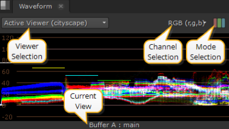
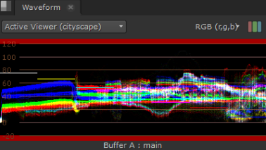

The Waveform scope provides information on clip luminance, or brightness, which you can use to decide whether the clip is over or under exposed. The white traces represent luminance values from 0 - 100% (black through the spectrum to white). The higher the waveform, the brighter the image in the Viewer.

TIP: You can pan the view area by holding Alt, or the middle mouse button, and dragging in the panel.
The upper white marker is used to measure when over exposure could be a problem. If your waveform has a lot of traces over the white marker, you should consider reducing the brightness of the clip. The opposite is true of the lower black marker.
There are also Viewer and Mode selection controls on the Waveform tab:
• Viewer selection - if you have multiple Viewers open, use the dropdown menu to associate Waveform output to the required clip.
The default value, Active Viewer, automatically displays details on the last Viewer you selected.
• Channel selection - select the channels to output. The default setting displays RGB, but you can also view channels separately.
• Mode selection - select the mode to output. The default setting displays ganged RGB, but you can also view the channels separately.
• Current View - describes the view currently displayed in the scope, whether it's the A or B buffer and the view. The view defaults to main, unless main has been replaced in multi-view scripts or projects.
Depending on which Viewer tools and views you have active, you can have up to four scopes displayed at once.
For example, with two stereo Read nodes, one in each input buffer, and wipe and Side by Side active, the scopes display something like this:
The scopes feature global customizable guides to help you view your clips. Navigate to Preferences > Panels > Scopes and enter values between 0 and 1 for the Black and White points. Note that this also sets the values for the Histogram display.
The guides at the top and bottom of the Waveform turn red to warn you when the distribution is out of range:

|
|